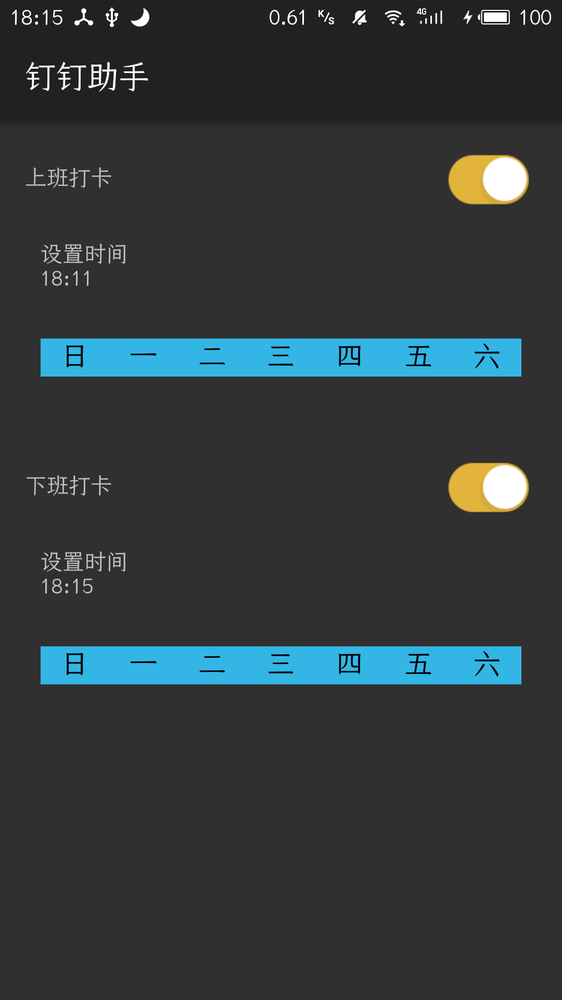

一.源码传送门：
- AlarmManagerClock
此文是在此基础上做的讲解,用于加深印象
二.界面截图

三.类
AlarmActivity.java
是处理弹出提示窗口的一个Activity；AlarmAlertActivity.java
Main类，设置时间周期等操作- AlarmOpreation.java
核心逻辑处理类，负责计算周期时间，然后将时间通过AlarmManager发送定时广播； - AlarmReceiver.java
广播类，负责处理3发送的广播类型，弹出1； - AlarmsSetting.java
设置的时间信息的存取类； - SharedPreferenceUtil.java
配合5的一个存储类； - TimePickerFragment.java
设置时间的工具类； - WeekGridAdpter.java
设置星期的工具类；
四.顺着去看
核心api：Android原生定时器AlarmManager
- 从AlarmActivity点击时间开始
1 | @Override |
其中设置时间的方法：
1 | public void showTimePickerDialog(final int type) { |
- TimePickerFragment窗口
此类实质上就是继承至 DialogFragment调用 TimePickerDialog向外提供获取小时和分钟的接口！ - WeekGridAdpter.java
而星期的周期复杂些，此行星期选项列表是一排 GridView,WeekGridAdpter就是它的 Adapter，在构造方法的 GetView中，可以看出，大神将周一至周日，组成一个二进制数据：
1 | if(v.isSelected()){ |
传入对应参数到AlarmOpreation
1 | AlarmOpreation.cancelAlert(context,type); |
- AlarmOpreation.class
1 | /** |
设置:主要是将存储好的时间设置信息（小时，分钟，星期），通过 cacluteNextAlarm方法设置成一个特殊的 Calendar值用于定时，然后将对应的 type和 Action组成一个通过广播 pi！通过 AlarmManager的 set方法定时， mAlarmManager.set(AlarmManager.RTC_WAKEUP,mCalendar.getTimeInMillis(),pi);，定时将 pi中的内容发送出去！
核心就是这样！
1 | /** |
处理成循环周期
1 | public static Calendar cacluteNextAlarm(int hour, int minute, int dayOfweek){ |
然后通过SharedPreferenceUtil将设置的值存储下来
当设置好定时器后，系统就会在指定的时间发送广播过来通知
- AlarmReceiver.class
1 | @Override |

...
...
00:00
00:00
听首歌放松一下！